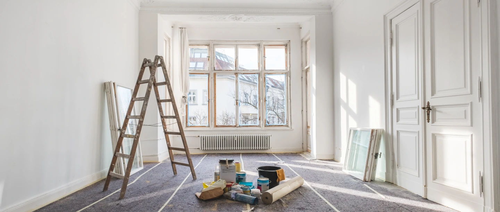
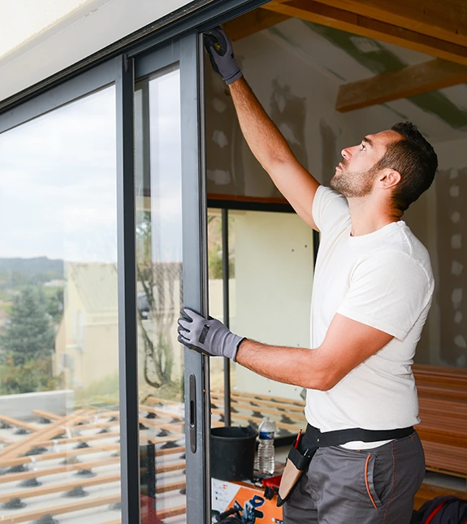

Samma hus.
Nya möjligheter.
Gör plats för en ny vardag. Vi bygger om bostäder och lokaler i Västerås så att rummen passar hur du vill leva och arbeta.
Se möjligheterna
i det som redan finns.
En ändrad planlösning kan ge ett rymligare kök, ett extra sovrum eller en mer funktionell arbetsplats. Vi tar oss an både mindre ändringar och större ombyggnationer.
TiB samarbetar med bland annat arkitekter och konstruktörer när projektet kräver det. Genom att komma in tidigt kan vi bidra med kunskap om genomförande och praktiska lösningar.
- Förändrad planlösning
- Kök, rum och entréer
- Bostäder, butiker och kontor
- Samordning med övriga specialister

Bättre flöde mellan rummen.
Vi utgår från hur ytorna används och vad som behöver förändras. Förutsättningar, konstruktion och eventuella tillstånd behöver vara utredda innan själva ombyggnaden börjar.
Prata med oss om ditt projektFrågor om
ombyggnad.
Rätt förutsättningar gör det lättare att välja väg.
Bygger ni om kommersiella lokaler?
Ja. Vi arbetar med både privata bostäder och lokaler för företag, bland annat kontor och butiker.
Kan ni arbeta tillsammans med min arkitekt?
Ja. Vi är vana vid samarbete med arkitekter, konstruktörer och andra specialister.